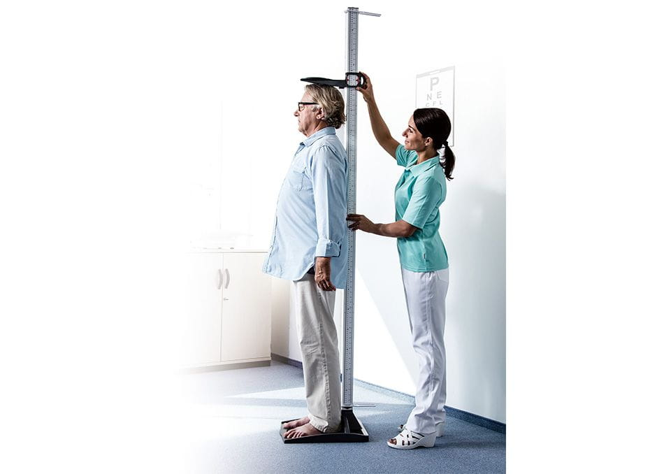
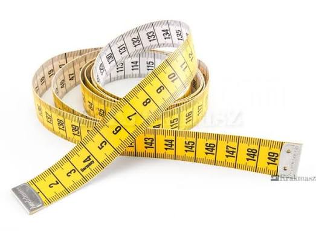
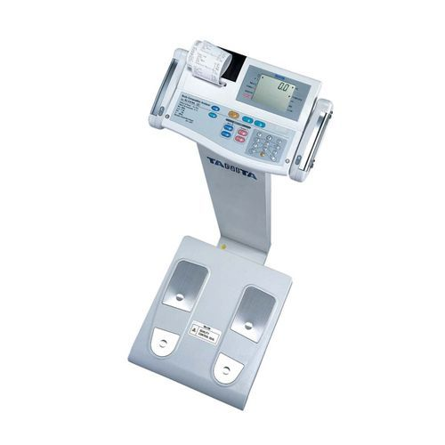

Stadiometrwzrost stojąc i wysokość siedzeniowa
Wizyta T0 · antropometria
Krótka instrukcja stanowiskowa: wzrost stojąc, wysokość siedzeniowa, masa ciała, wydruk z Tanity i pozostałe dane do kalkulatora dojrzewania.
Najważniejsza zasada CRF
Jeżeli dwa wyniki wzrostu stojąc lub wysokości siedzeniowej różnią się o więcej niż 0,5 cm, wykonaj trzeci pomiar. Jako wynik do kalkulatora wpisz medianę.
Przygotuj stanowisko



Aktualna wersja do druku
Formularz zawiera dane wejściowe, pomiary antropometryczne oraz wzrost rodziców. Wpisuj wyłącznie kod uczestnika — bez imienia i nazwiska.
Rozwiń tylko potrzebny pomiar
Nie wpisuj do pola Sitting Height surowego odczytu ze stadiometru. Najpierw odejmij wysokość stołu.
Planowany materiał pokaże przygotowanie urządzenia, wprowadzenie danych, prawidłową pozycję uczestnika, wykonanie pomiaru, odczyt i opisanie wydruku. Do tego czasu urządzenie obsługuje wyłącznie osoba przeszkolona, zgodnie z bieżącą instrukcją stanowiska.
Zadanie kończy się dopiero wtedy, gdy wydruk ma czytelny kod i został dołączony do właściwych dokumentów.
CRF przewiduje długość kończyny dolnej, uda i goleni osobno dla lewej i prawej strony. Nie publikujemy niezatwierdzonych punktów anatomicznych. Do czasu dodania dokładnej metodologii wykonuj te pomiary wyłącznie według zatwierdzonej instrukcji stanowiska.
Do CRF: wpisz Pomiar 1 i Pomiar 2 w centymetrach, a trzeci tylko wtedy, gdy wymaga tego aktualna procedura.
Dane dodatkowe do kalkulatora
Zapisz wzrost matki i ojca w centymetrach oraz zaznacz źródło: pomiar albo deklaracja. Jeżeli brakuje wzrostu jednego z rodziców, wartość %PAH pozostaje pusta.
Przed oddaniem dokumentów
To skrócona pomoc stanowiskowa. Pełną instrukcję Tanity oraz punkty pomiaru długości kończyn dodamy po zatwierdzeniu metodologii.